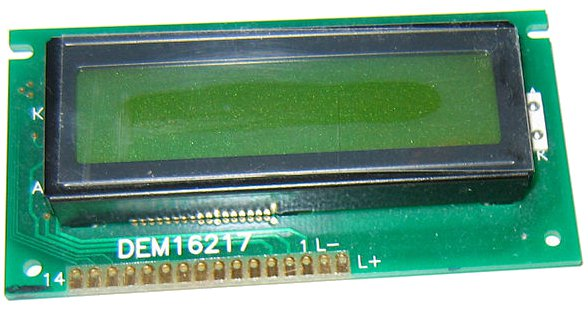
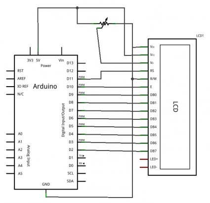
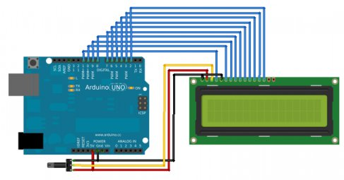
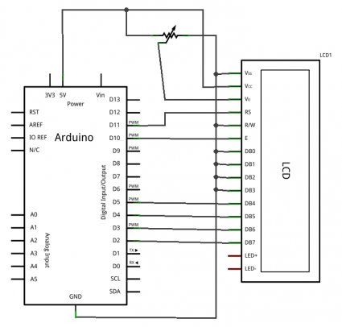
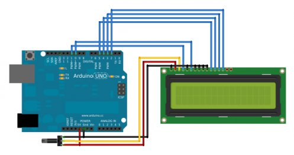
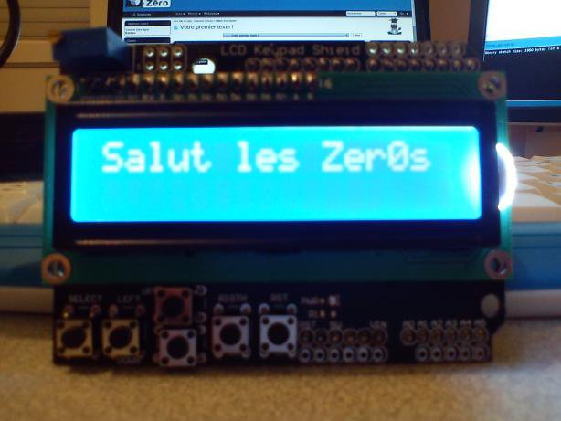

Vous avez appris plus tôt comment interagir avec l’ordinateur, lui envoyer de l’information. Mais maintenant, vous voudrez sûrement pouvoir afficher de l’information sans avoir besoin d’un ordinateur. Avec les écrans LCD , nous allons pouvoir afficher du texte sur un écran qui n’est pas très coûteux et ainsi faire des projets sensationnels !
Sommaire
Un écran LCD c’est quoi ?
Mettons tout de suite au clair les termes : LCD signifie "Liquid Crystal Display" et se traduit, en français, par "Écran à Cristaux Liquides" (mais on n’a pas d’acronymes classe en français donc on parlera toujours de LCD ). Ces écrans sont PARTOUT ! Vous en trouverez dans plein d’appareils électroniques disposant d’afficheur : les montres, le tableau de bord de votre voiture, les calculatrices, etc. Cette utilisation intensive est due à leur faible consommation et coût. Mais ce n’est pas tout ! En effet, les écrans LCD sont aussi sous des formes plus complexes telles que la plupart des écrans d’ordinateur ainsi que les téléviseurs à écran plat. Cette technologie est bien maîtrisée et donc le coût de production est assez bas. Dans les années à venir, ils vont avoir tendance à être remplacés par les écrans à affichage LED qui sont pour le moment trop chers.
J’en profite pour mettre l’alerte sur la différence des écrans à LED. Il en existe deux types :
- les écrans à rétro-éclairage LED : ce sont des écrans LCD tout à fait ordinaires qui ont simplement la particularité d’avoir un rétro-éclairage à LED à la place des tubes néon. Leur prix est du même ordre de grandeur que les LCD "normaux". En revanche, la qualité d’affichage des couleurs semble meilleure comparés aux LCD "normaux".
- les écrans à affichage LED : ceux-ci ne disposent pas de rétro-éclairage et ne sont ni des écrans LCD , ni des écrans plasma. Ce sont des écrans qui, en lieu et place des pixels, se trouvent des LED de très très petite taille. Leur coût est prohibitif pour le moment, mais la qualité de contraste et de couleur inégale tous les écrans existants !
Les deux catégories précédentes (écran LCD d’une montre par exemple et celui d’un moniteur d’ordinateur) peuvent être différenciées assez rapidement par une caractéristique simple : la couleur . En effet, les premiers sont monochromes (une seule couleur) tandis que les seconds sont colorés (rouge, vert et bleu). Dans cette partie, nous utiliserons uniquement le premier type pour des raisons de simplicité et de coût.
Fonctionnement de l’écran
N’étant pas un spécialiste de l’optique ni de l’électronique "bas-niveau" (jonction et tout le tralala) je ne vais pas vous faire un cours détaillé sur le "comment ca marche ?" mais plutôt aller à l’essentiel, vers le "pourquoi ça s’allume ?". Comme son nom l’indique, un écran LCD possède des cristaux liquides. Mais ce n’est pas tout ! En effet, pour fonctionner il faut plusieurs choses. Si vous regardez de très près votre écran (éteint pour ne pas vous bousiller les yeux) vous pouvez voir une grille de carré. Ces carrés sont appelés des pixels (de l’anglais "Picture Element", soit "Élément d’image" en français, encore une fois c’est moins classe). :P Chaque pixel est un cristal liquide. Lorsqu’aucun courant ne le traverse, ses molécules sont orientées dans un sens (admettons, 0°). En revanche lorsqu’un courant le traverse, ses molécules vont se tourner dans la même direction (90°). Voilà pour la base.
Mais pourquoi il y a de la lumière dans un cas et pas dans l’autre ?
Tout simplement parce que cette lumière est polarisée . Cela signifie que la lumière est orientée dans une direction (c’est un peu compliqué à démontrer, je vous demanderais donc de l’admettre). En effet, entre les cristaux liquides et la source lumineuse se trouve un filtre polariseur de lumière. Ce filtre va orienter la lumière dans une direction précise. Entre vos yeux et les cristaux se trouve un autre écran polariseur, qui est perpendiculaire au premier. Ainsi, il faut que les cristaux liquides soient dans la bonne direction pour que la lumière passe de bout en bout et revienne à vos yeux. Un schéma vaut souvent mieux qu’un long discours, je vous conseille donc de regarder celui sur la droite de l’explication pour mieux comprendre (source : Wikipédia). Enfin, vient le rétro-éclairage (fait avec des LED) qui vous permettra de lire l’écran même en pleine nuit (sinon il vous faudrait l’éclairer pour voir le contraste).
Si vous voulez plus d’informations sur les écrans
LCD
, j’invite votre curiosité à se diriger vers ce lien
Wikipédia
ou d’autres sources.

Commande du LCD
Normalement, pour pouvoir afficher des caractères sur l’écran il nous faudrait activer individuellement chaque pixel de l’écran. Un caractère est représenté par un bloc de 7 5 pixels. Ce qui fait qu’un écran de 16 colonnes et 2 lignes représente un total de 16 2 7 5 = 1120 pixels ! :P Heureusement pour nous, des ingénieurs sont passés par là et nous ont simplifié la tâche.
Le décodeur de caractères
Tout comme il existe un driver vidéo pour votre carte graphique d’ordinateur, il existe un driver " LCD " pour votre afficheur. Rassurez-vous, aucun composant ne s’ajoute à votre liste d’achats puisqu’il est intégré dans votre écran. Ce composant va servir à décoder un ensemble "simple" de bits pour afficher un caractère à une position précise ou exécuter des commandes comme déplacer le curseur par exemple. Ce composant est fabriqué principalement par Hitachi et se nomme le HC44780 . Il sert de décodeur de caractères . Ainsi, plutôt que de devoir multiplier les signaux pour commander les pixels un à un, il nous suffira d’envoyer des octets de commandes pour lui dire "écris moi 'zeste' à partir de la colonne 3 sur la ligne 1". Ce composant possède 16 broches que je vais brièvement décrire :
| N° | Nom | Rôle |
|---|---|---|
| 1 | VSS | Masse |
| 2 | Vdd | +5V |
| 3 | V0 | Réglage du contraste |
| 4 | RS | Sélection du registre (commande ou donnée) |
| 5 | R/W | Lecture ou écriture |
| 6 | E | Entrée de validation |
| 7 à 14 | D0 à D7 | Bits de données |
| 15 | A | Anode du rétroéclairage (+5V) |
| 16 | K | Cathode du rétroéclairage (masse) |
Normalement, pour tous les écrans
LCD
(non graphiques) ce brochage est le même. Donc pas d’inquiétude lors des branchements, il vous suffira de vous rendre sur cette page pour consulter le tableau.

Par la suite, les broches utiles qu’il faudra relier à l’Arduino sont les broches 4, 5 (facultatives), 6 et les données (7 à 14 pouvant être réduite à 8 à 14) en n’oubliant pas l’alimentation et la broche de réglage du contraste. Ce composant possède tout le système de traitement pour afficher les caractères. Il contient dans sa mémoire le schéma d’allumage des pixels pour afficher chacun d’entre eux. Voici la table des caractères affichables :
Quel écran choisir ?
Les caractéristiques
Texte ou Graphique ?
Dans la grande famille afficheur LCD , on distingue plusieurs catégories :
- Les afficheurs alphanumériques
- Les afficheurs graphiques monochromes
- Les afficheurs graphiques couleur
Les premiers sont les plus courants. Ils permettent d’afficher des lettres, des chiffres et quelques caractères spéciaux. Les caractères sont prédéfinis (voir table juste au-dessus) et on n’a donc aucunement besoin de gérer chaque pixel de l’écran. Les seconds sont déjà plus avancés. On a accès à chacun des pixels et on peut donc produire des dessins beaucoup plus évolués. Ils sont cependant légèrement plus onéreux que les premiers. Les derniers sont l’évolution des précédents, la couleur en plus (soit 3 fois plus de pixels à gérer : un sous-pixel pour le rouge, un autre pour le bleu et un dernier pour le vert, le tout forme la couleur d’un seul pixel). Pour le TP on se servira d’afficheur de la première catégorie, car ils suffisent à faire de nombreux montages et restent accessibles pour des zesteurs.

Ce n’est pas la taille qui compte !
Les afficheurs existent dans de nombreuses tailles. Pour les afficheurs de type textes, on retrouve le plus fréquemment le format 2 lignes par 16 colonnes. Il en existe cependant de nombreux autres avec une seule ligne, ou 4 (ou plus) et 8 colonnes, ou 16, ou 20 ou encore plus ! Libre à vous de choisir la taille qui vous plait le plus, sachant que le TP devrait s’adapter sans souci à toute taille d’écran (pour ma part, ce sera un 2 lignes 16 colonnes) !
La couleur, c’est important
Nan je blague ! Prenez la couleur qui vous plait ! Vert, blanc, bleu, jaune, amusez-vous ! (moi c’est écriture blanche sur fond bleu, mais je rêve d’un afficheur à la matrix, noir avec des écritures vertes !)
Communication avec l’écran
La communication parallèle
De manière classique, on communique avec l’écran de manière parallèle . Cela signifie que l’on envoie des bits par blocs , en utilisant plusieurs broches en même temps (opposée à une transmission série où les bits sont envoyés un par un sur une seule broche). Comme expliqué plus tôt dans ce chapitre, nous utilisons 10 broches différentes, 8 pour les données (en parallèle donc) et 2 pour de la commande (E : Enable et RS : Registre Selector). La ligne R/W peut être connecté à la masse si l’on souhaite uniquement faire de l’écriture.
Pour envoyer des données sur l’écran, c’est en fait assez simple. Il suffit de suivre un ordre logique et un certain timing pour que tout se passe bien. Tout d’abord, il nous faut placer la broche RS à 1 ou 0 selon que l’on veut envoyer une commande, par exemple "déplacer le curseur à la position (1;1)" ou que l’on veut envoyer une donnée : "écris le caractère 'a' ". Ensuite, on place sur les 8 broches de données (D0 à D7) la valeur de la donnée à afficher. Enfin, il suffit de faire une impulsion d’au moins 450 ns pour indiquer à l’écran que les données sont prêtes. C’est aussi simple que ça !
Cependant, comme les ingénieurs d’écrans sont conscients que la communication parallèle prend beaucoup de broches, ils ont inventé un autre mode que j’appellerai "semi-parallèle". Ce dernier se contente de travailler avec seulement les broches de données D4 à D7 (en plus de RS et E) et il faudra mettre les quatre autres (D0 à D3) à la masse. Il libère donc quatre broches. Dans ce mode, on fera donc deux fois le cycle "envoi des données puis impulsion sur E" pour envoyer un octet complet.
Ne vous inquiétez pas à l’idée de tout cela. Pour la suite du chapitre, nous utiliserons une libraire nommée LiquidCrystal qui se chargera de gérer les timings et l’ensemble du protocole.
Pour continuer ce chapitre, le mode "semi-parallèle" sera choisi. Il nous permettra de garder plus de broches disponibles pour de futurs montages et est souvent câblé par défaut dans de nombreux shields (dont le mien). La partie suivante vous montrera ce type de branchement. Et pas de panique, je vous indiquerai également la modification à faire pour connecter un écran en mode "parallèle complet".
La communication série
Lorsque l’on ne possède que très peu de broches disponibles sur notre Arduino, il peut être intéressant de faire appel à un composant permettant de communiquer par voie série avec l’écran. Un tel composant se chargera de faire la conversion entre les données envoyées sur la voie série et ce qu’il faut afficher sur l’écran. Le gros avantage de cette solution est qu’elle nécessite seulement un seul fil de donnée (avec une masse et le VCC) pour fonctionner là où les autres méthodes ont besoin de presque une dizaine de broches.
Toujours dans le cadre du prochain TP, nous resterons dans le classique en utilisant une connexion parallèle. En effet, elle nous permet de garder l’approche "standard" de l’écran et nous permet de garder la liaison série pour autre chose (encore que l’on pourrait en émuler une sans trop de difficulté). Ce composant de conversion "Série -> parallèle" peut-être réalisé simplement avec un 74h595
(je vous laisse coder le driver comme exercice si vous voulez :P )
Et par liaison I²C
Un dernier point à voir, c’est la communication de la carte Arduino vers l’écran par la liaison I²C. Cette liaison est utilisable avec seulement 2 broches (une broche de donnée et une broche d’horloge) et nécessite l’utilisation de deux broches analogiques de l’Arduino (broche 4 et 5).
Comment on s’en sert ?
Comme expliqué précédemment, je vous propose de travailler avec un écran dont seulement quatre broches de données sont utilisées. Pour le bien de tous je vais présenter ici les deux montages, mais ne soyez pas surpris si dans les autres montages ou les vidéos vous voyez seulement un des deux.
Le branchement
L’afficheur LCD utilise 6 à 10 broches de données ((D0 à D7) ou (D4 à D7) + RS + E) et deux d’alimentations (+5V et masse). La plupart des écrans possèdent aussi une entrée analogique pour régler le contraste des caractères. Nous brancherons dessus un potentiomètre de 10 kOhms. Les 10 broches de données peuvent être placées sur n’importe quelles entrées/sorties numériques de l’Arduino. En effet, nous indiquerons ensuite à la librairie LiquidCrystal qui est branché où.
Le montage à 8 broches de données


Le montage à 4 broches de données


Le démarrage de l’écran avec Arduino
Comme écrit plus tôt, nous allons utiliser la librairie "LiquidCrystal". Pour l’intégrer, c’est très simple, il suffit de cliquer sur le menu "Import Library" et d’aller chercher la bonne. Une ligne
#include "LiquidCrystal.h"
doit apparaitre en haut de la page de code (les prochaines fois vous pourrez aussi taper cette ligne à la main directement, ça aura le même effet). Ensuite, il ne nous reste plus qu’à dire à notre carte Arduino où est branché l’écran (sur quelles broches) et quelle est la taille de ce dernier (nombre de lignes et de colonnes). Nous allons donc commencer par déclarer un objet (c’est en fait une variable évoluée, plus de détails dans la prochaine partie)
lcd
, de type
LiquidCrystal
et qui sera global à notre projet. La déclaration de cette variable possède plusieurs formes
(lien vers la doc.)
:
-
LiquidCrystal(rs, enable, d0, d1, d2, d3, d4, d5, d6, d7)où rs est le numéro de la broche où est branché "RS", "enable" est la broche "E" et ainsi de suite pour les données. -
LiquidCrystal(rs, enable, d4, d5, d6, d7)(même commentaire que précédemment)
Ensuite, dans le
setup()
il nous faut démarrer l’écran en spécifiant son nombre de
colonnes
puis de
lignes
. Cela se fait grâce à la fonction
begin(cols,rows)
. Voici un exemple complet de code correspondant aux deux branchements précédents (commentez la ligne qui ne vous concerne pas) :
#include "LiquidCrystal.h" // ajout de la librairie
// Vérifiez les broches !
LiquidCrystal lcd(11,10,9,8,7,6,5,4,3,2); // liaison 8 bits de données
LiquidCrystal lcd(11,10,5,4,3,2); // liaison 4 bits de données
void setup()
{
lcd.begin(16,2); // utilisation d'un écran 16 colonnes et 2 lignes
lcd.write("Salut ca zeste ?"); // petit test pour vérifier que tout marche
}
void loop() {}
Surtout ne mettez pas d’accents ! L’afficheur ne les accepte pas par défaut et affichera du grand n’importe quoi à la place.
Vous remarquez que j’ai rajouté une ligne dont je n’ai pas parlé encore. Je l’ai juste mise pour vérifier que tout fonctionne bien avec votre écran, nous reviendrons dessus plus tard. Si tout se passe bien, vous devriez obtenir l’écran suivant :

Si jamais rien ne s’affiche, essayez de tourner votre potentiomètre de contraste. Si cela ne marche toujours pas, vérifier les bonnes attributions des broches (surtout si vous utilisez un shield).
Maintenant que nous maîtrisons les subtilités concernant l’écran, nous allons pouvoir commencer à jouer avec… En avant !

{kind=link}
{kind=link}